Init SIFT time: 2.2649765014648438e-05
FLANN initial time: 0.000194549560546875
FLANN Maching time: 0.000194549560546875
Ratio test time: 5.817413330078125e-05
Liczba dobrych dopasowañ: 1
RANSAC_init_time: 5.817413330078125e-05
Init SIFT time: 1.8358230590820312e-05
FLANN initial time: 8.463859558105469e-05
FLANN Maching time: 8.463859558105469e-05
Ratio test time: 3.5762786865234375e-05
Liczba dobrych dopasowañ: 3
RANSAC_init_time: 3.5762786865234375e-05
RANSAC_model_time: [[-2.57068594e-02 1.07969143e-01 3.27249321e+01] [ 1.15680868e-01 -4.85861144e-01 8.07378055e+01]]
RANSAC_model_time: 3.5762786865234375e-05
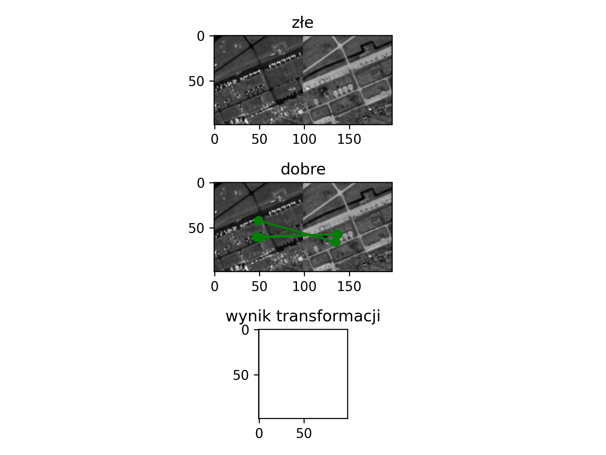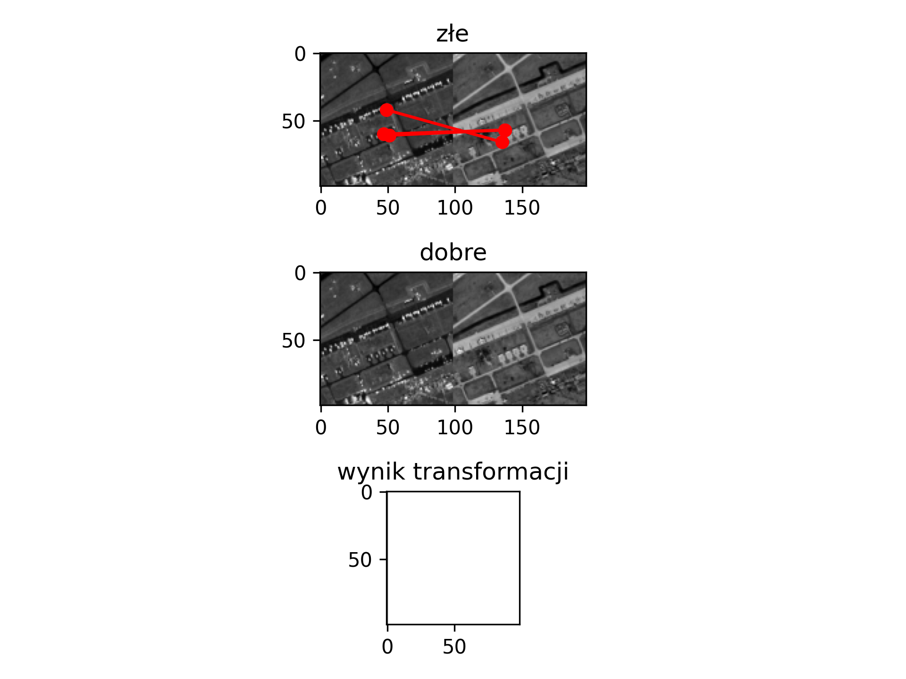Norm/SAR_URRC_SUB_10m_log -> Norm/EO_URRC_SUB_10m_gray
N corr: 3Init SIFT time: 7.867813110351562e-06
FLANN initial time: 3.790855407714844e-05
FLANN Maching time: 3.790855407714844e-05
Ratio test time: 1.52587890625e-05
Liczba dobrych dopasowañ: 2
RANSAC_init_time: 1.52587890625e-05
Init SIFT time: 1.2874603271484375e-05
FLANN initial time: 3.8623809814453125e-05
FLANN Maching time: 3.8623809814453125e-05
Ratio test time: 0.012961864471435547
Liczba dobrych dopasowañ: 47
RANSAC_init_time: 0.012961864471435547
RANSAC_model_time: [[ 3.74134866e-01 9.57303046e-01 -1.97571564e+02] [-1.70474966e-01 4.00429739e-01 6.33829182e+02]]
RANSAC_model_time: 0.012961864471435547
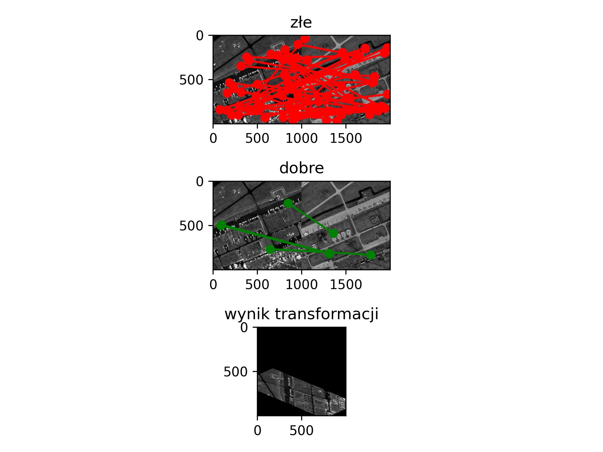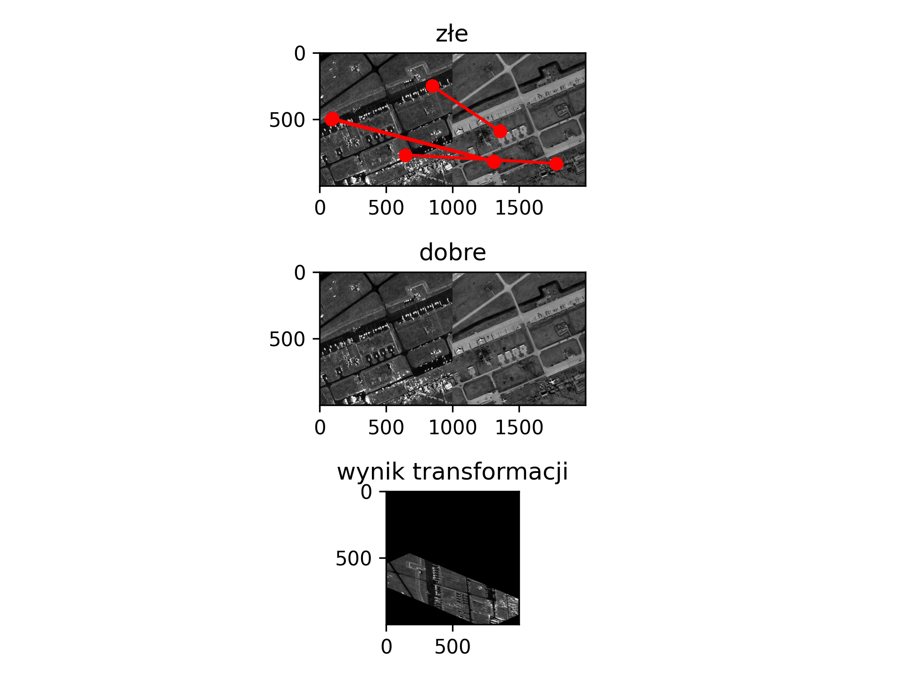Norm/SAR_URRC_SUB_1m_gray -> Norm/EO_URRC_SUB_1m_gray
N corr: 5Init SIFT time: 2.2172927856445312e-05
FLANN initial time: 5.555152893066406e-05
FLANN Maching time: 5.555152893066406e-05
Ratio test time: 0.002405405044555664
Liczba dobrych dopasowañ: 6
RANSAC_init_time: 0.002405405044555664
RANSAC_model_time: [[ 1.38440025e+02 4.82507938e+01 -1.06837929e+05] [ 4.92650642e+01 1.63628412e+01 -3.72550525e+04]]
RANSAC_model_time: 0.002405405044555664
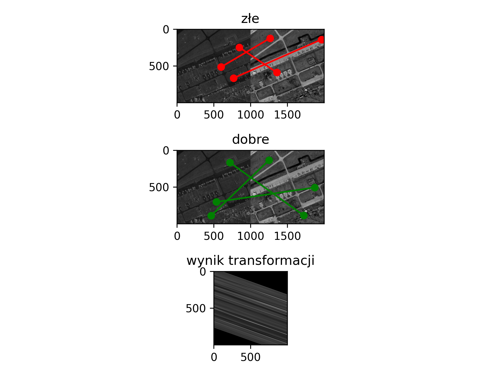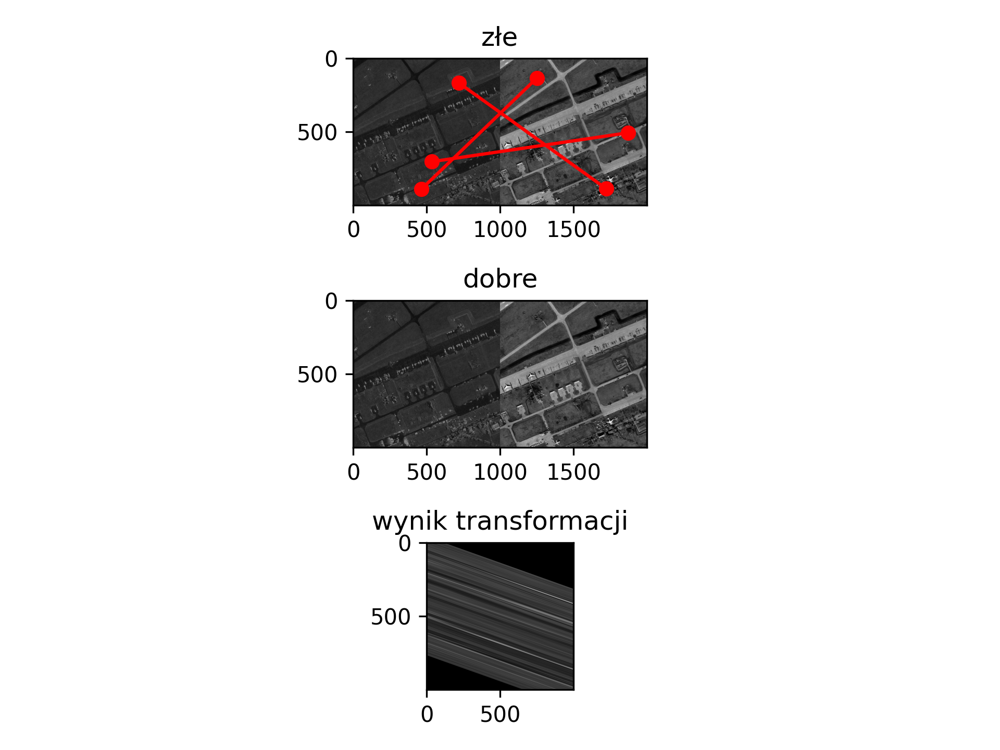Norm/SAR_URRC_SUB_1m_log -> Norm/EO_URRC_SUB_1m_gray
N corr: 3Init SIFT time: 1.1682510375976562e-05
FLANN initial time: 7.05718994140625e-05
FLANN Maching time: 7.05718994140625e-05
Ratio test time: 0.00026917457580566406
Liczba dobrych dopasowañ: 1
RANSAC_init_time: 0.00026917457580566406
Init SIFT time: 1.4781951904296875e-05
FLANN initial time: 3.719329833984375e-05
FLANN Maching time: 3.719329833984375e-05
Ratio test time: 0.14639949798583984
Liczba dobrych dopasowañ: 289
RANSAC_init_time: 0.14639949798583984
RANSAC_model_time: [[-2.61545773e-01 1.46675812e-01 2.59822382e+03] [-4.47813509e-01 -2.27035572e-01 3.64839946e+03]]
RANSAC_model_time: 0.14639949798583984
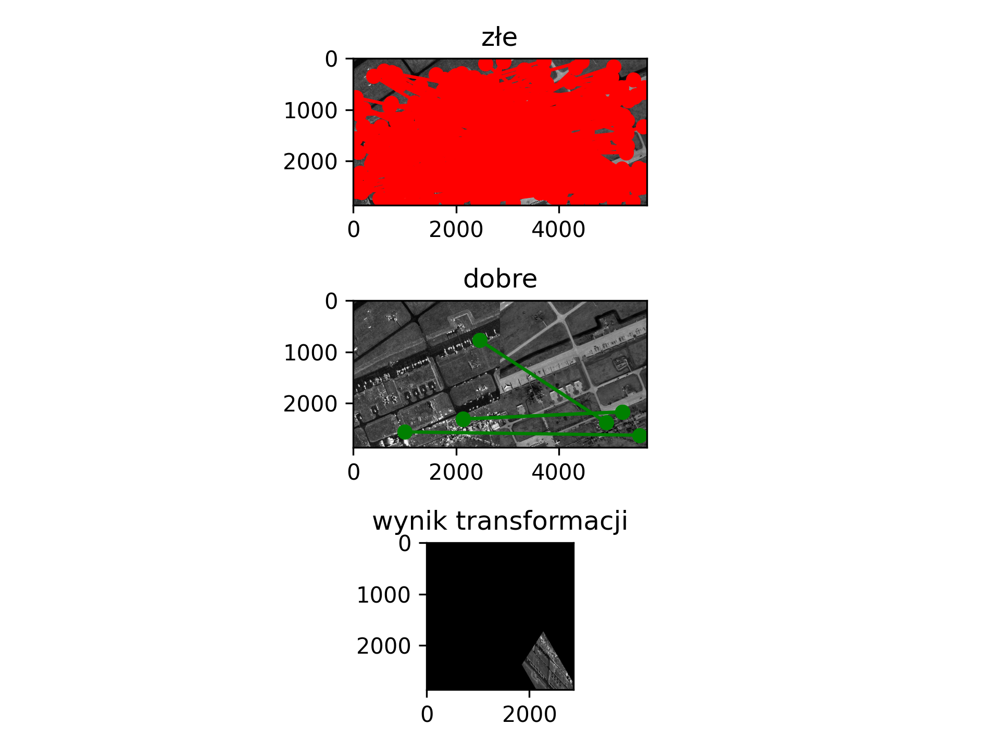
Norm/SAR_URRC_SUB_035m_gray -> Norm/EO_URRC_SUB_035m_gray
N corr: 4Init SIFT time: 1.811981201171875e-05
FLANN initial time: 4.2438507080078125e-05
FLANN Maching time: 4.2438507080078125e-05
Ratio test time: 0.003268718719482422
Liczba dobrych dopasowañ: 16
RANSAC_init_time: 0.003268718719482422
RANSAC_model_time: [[ 9.00979226e-01 -2.03071853e-01 7.18304895e+02] [ 1.19928876e+00 -4.98803535e-01 3.33604849e+02]]
RANSAC_model_time: 0.003268718719482422
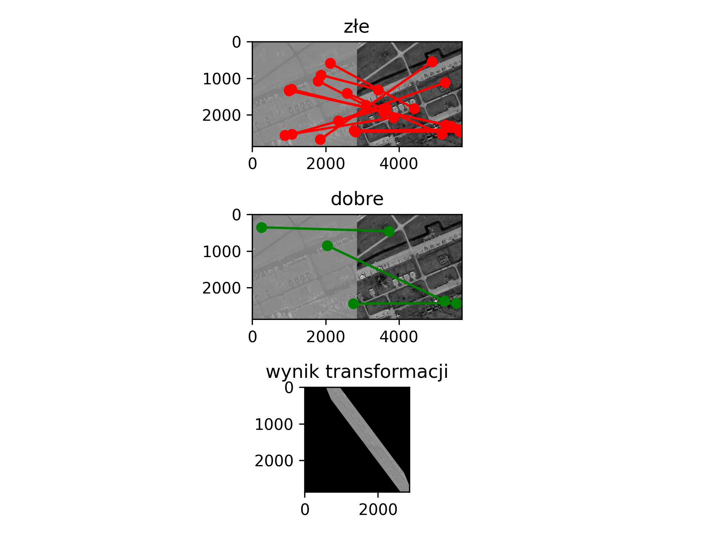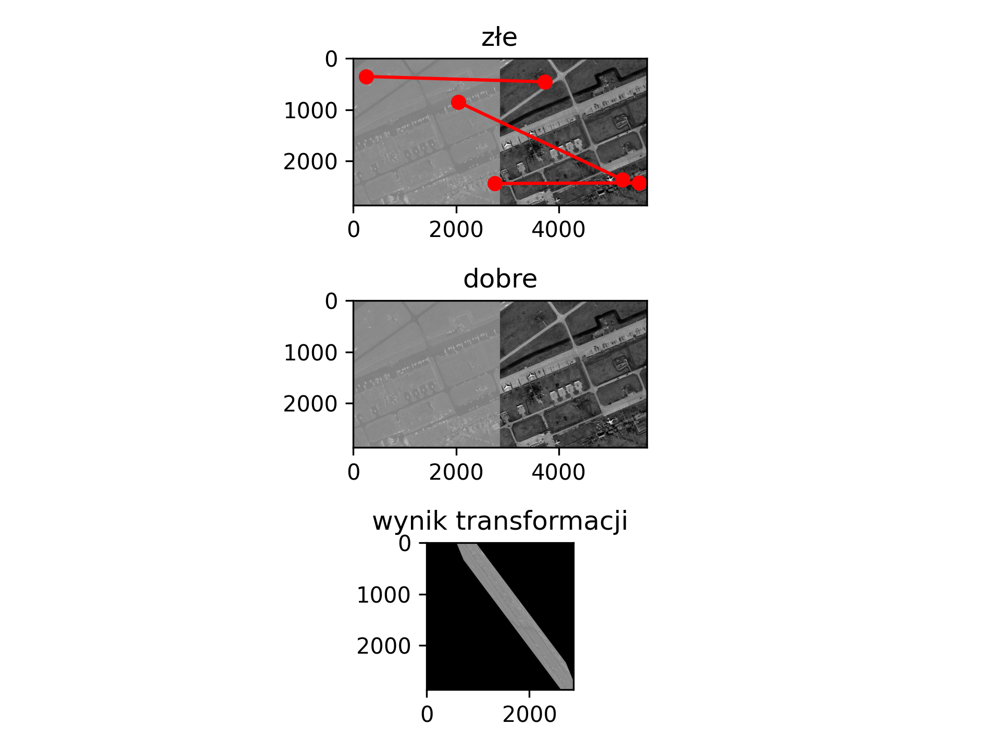Norm/SAR_URRC_SUB_035m_log -> Norm/EO_URRC_SUB_035m_gray
N corr: 3Init SIFT time: 1.5974044799804688e-05
FLANN initial time: 3.3855438232421875e-05
FLANN Maching time: 3.3855438232421875e-05
Ratio test time: 0.0007176399230957031
Liczba dobrych dopasowañ: 6
RANSAC_init_time: 0.0007176399230957031
RANSAC_model_time: [[ 2.43975131e-01 3.95779569e-01 1.04499691e+03] [-6.82203822e-02 -1.01007880e-01 2.86345151e+03]]
RANSAC_model_time: 0.0007176399230957031
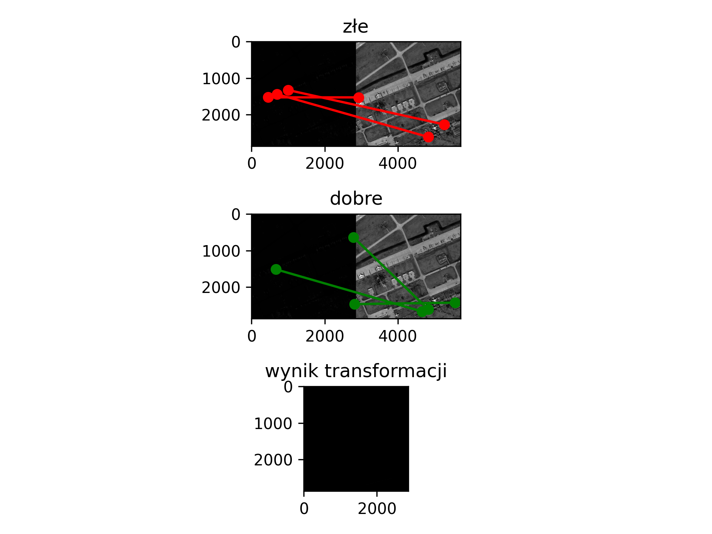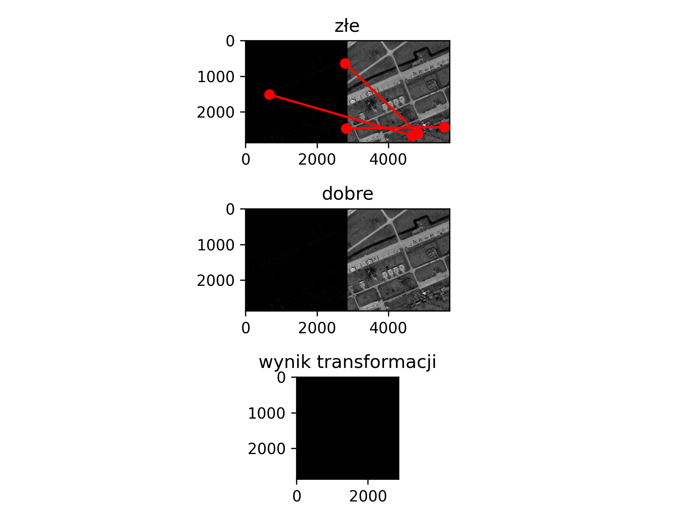Norm/SAR_URRC_SUB_035m_bad -> Norm/EO_URRC_SUB_035m_gray
N corr: 3Init SIFT time: 1.6689300537109375e-05
FLANN initial time: 0.0001327991485595703
FLANN Maching time: 0.0001327991485595703
Ratio test time: 1.9550323486328125e-05
Liczba dobrych dopasowañ: 0
RANSAC_init_time: 1.9550323486328125e-05
Init SIFT time: 5.7220458984375e-06
FLANN initial time: 3.4809112548828125e-05
FLANN Maching time: 3.4809112548828125e-05
Ratio test time: 2.0265579223632812e-05
Liczba dobrych dopasowañ: 1
RANSAC_init_time: 2.0265579223632812e-05
Init SIFT time: 7.62939453125e-06
FLANN initial time: 0.00018310546875
FLANN Maching time: 0.00018310546875
Ratio test time: 7.62939453125e-06
Liczba dobrych dopasowañ: 0
RANSAC_init_time: 7.62939453125e-06
Init SIFT time: 1.2159347534179688e-05
FLANN initial time: 4.220008850097656e-05
FLANN Maching time: 4.220008850097656e-05
Ratio test time: 0.008349180221557617
Liczba dobrych dopasowañ: 33
RANSAC_init_time: 0.008349180221557617
RANSAC_model_time: [[ 2.75564404e+00 9.81371009e-01 -5.85116106e+02] [ 1.03138267e-01 -3.32928620e-01 7.04706685e+02]]
RANSAC_model_time: 0.008349180221557617
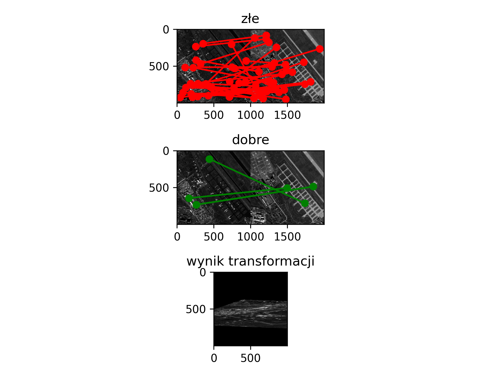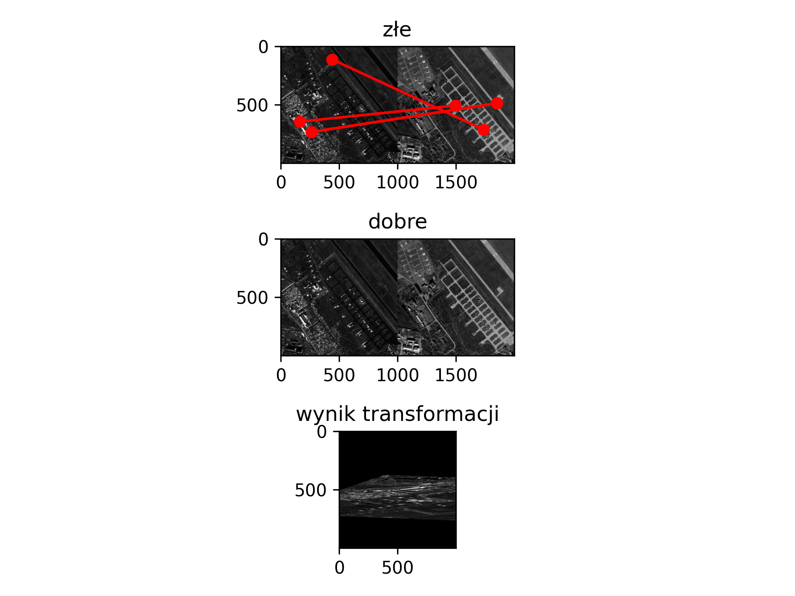Norm/SAR_UIAA_SUB_1m_gray -> Norm/EO_UIAA_SUB_1m_gray
N corr: 4Init SIFT time: 1.1920928955078125e-05
FLANN initial time: 0.00010323524475097656
FLANN Maching time: 0.00010323524475097656
Ratio test time: 0.0013575553894042969
Liczba dobrych dopasowañ: 3
RANSAC_init_time: 0.0013575553894042969
RANSAC_model_time: [[ -1.01915497 1.59314671 -264.28432727] [ -1.2100538 2.01688777 -558.94300994]]
RANSAC_model_time: 0.0013575553894042969
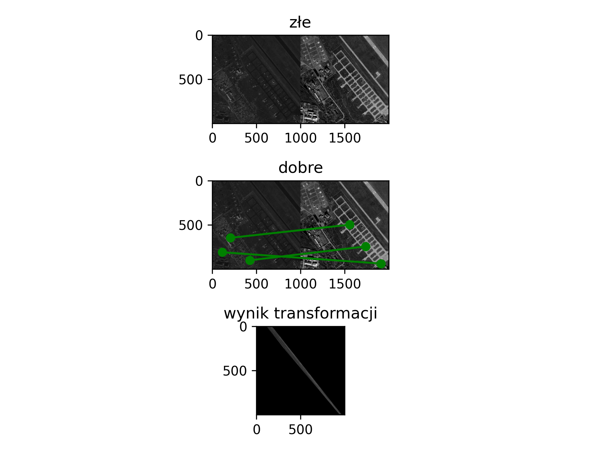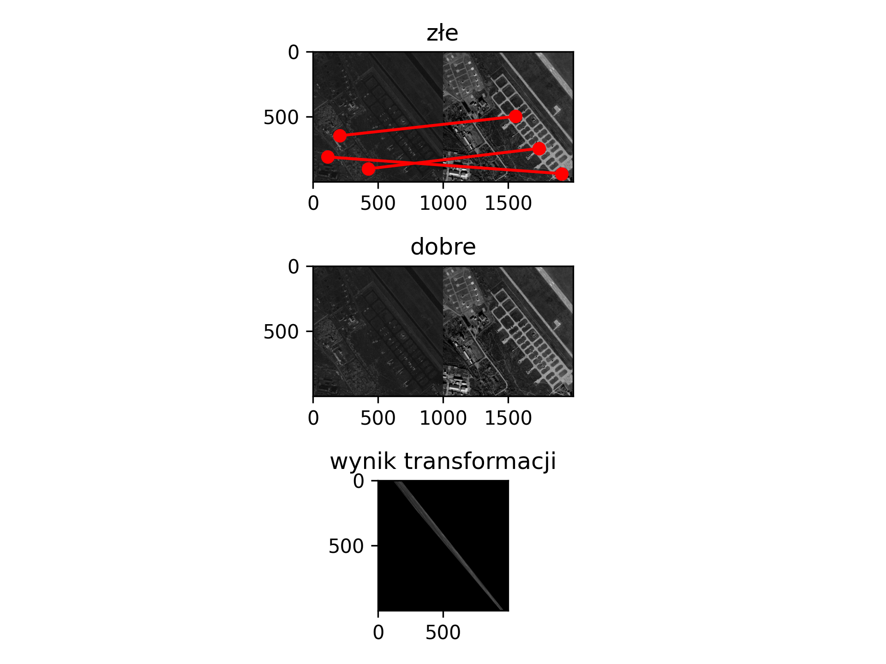Norm/SAR_UIAA_SUB_1m_log -> Norm/EO_UIAA_SUB_1m_gray
N corr: 3Init SIFT time: 1.9311904907226562e-05
FLANN initial time: 4.553794860839844e-05
FLANN Maching time: 4.553794860839844e-05
Ratio test time: 7.319450378417969e-05
Liczba dobrych dopasowañ: 1
RANSAC_init_time: 7.319450378417969e-05
Init SIFT time: 1.5735626220703125e-05
FLANN initial time: 2.9802322387695312e-05
FLANN Maching time: 2.9802322387695312e-05
Ratio test time: 0.11030888557434082
Liczba dobrych dopasowañ: 165
RANSAC_init_time: 0.11030888557434082
RANSAC_model_time: [[-1.86301050e+00 -1.32166547e+00 5.34538436e+03] [ 1.44334834e+00 1.37497573e+00 -1.93384250e+03]]
RANSAC_model_time: 0.11030888557434082
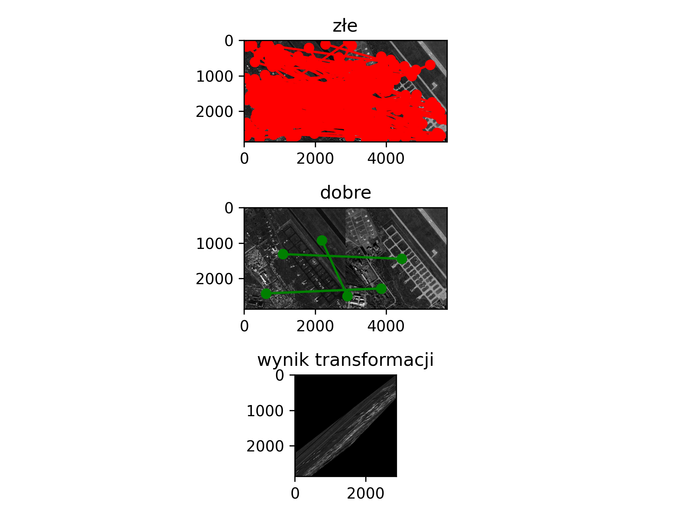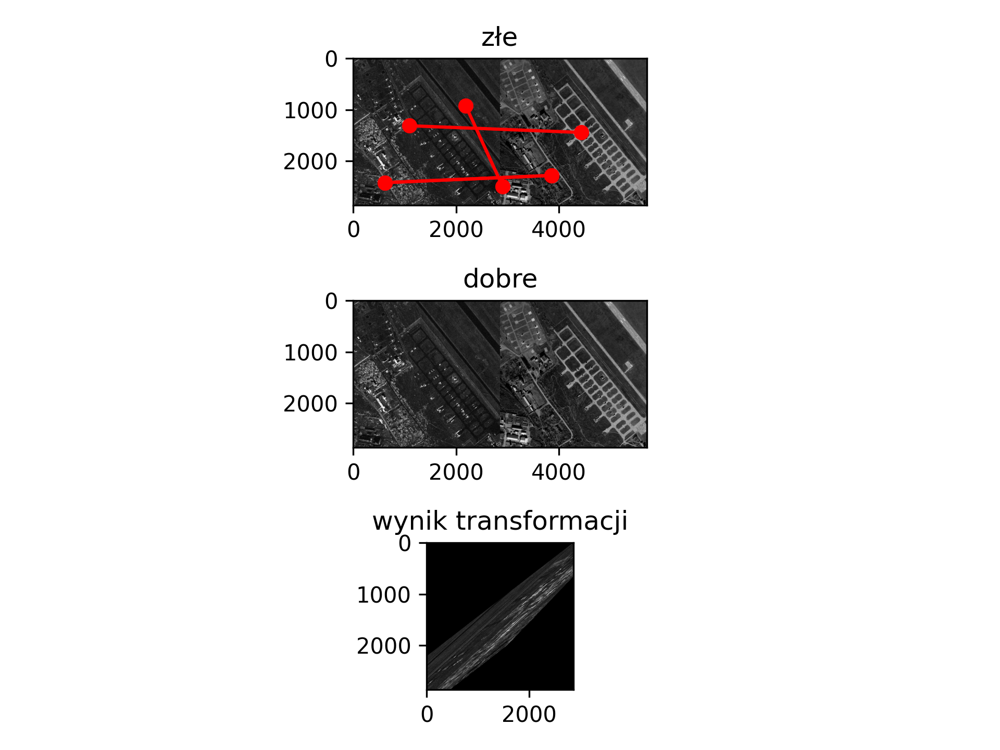Norm/SAR_UIAA_SUB_035m_gray -> Norm/EO_UIAA_SUB_035m_gray
N corr: 4Init SIFT time: 1.4781951904296875e-05
FLANN initial time: 8.082389831542969e-05
FLANN Maching time: 8.082389831542969e-05
Ratio test time: 0.0011377334594726562
Liczba dobrych dopasowañ: 2
RANSAC_init_time: 0.0011377334594726562
Init SIFT time: 1.239776611328125e-05
FLANN initial time: 7.319450378417969e-05
FLANN Maching time: 7.319450378417969e-05
Ratio test time: 0.00031375885009765625
Liczba dobrych dopasowañ: 8
RANSAC_init_time: 0.00031375885009765625
RANSAC_model_time: [[-3.45448528e-01 4.86418457e+00 -5.19763151e+03] [-1.48579647e-01 2.11354249e+00 -7.06199500e+02]]
RANSAC_model_time: 0.00031375885009765625
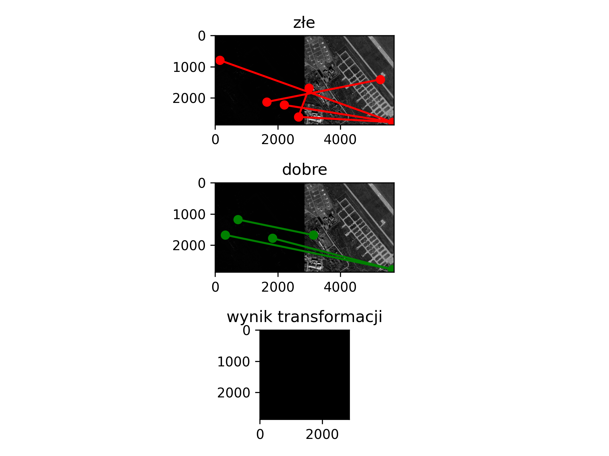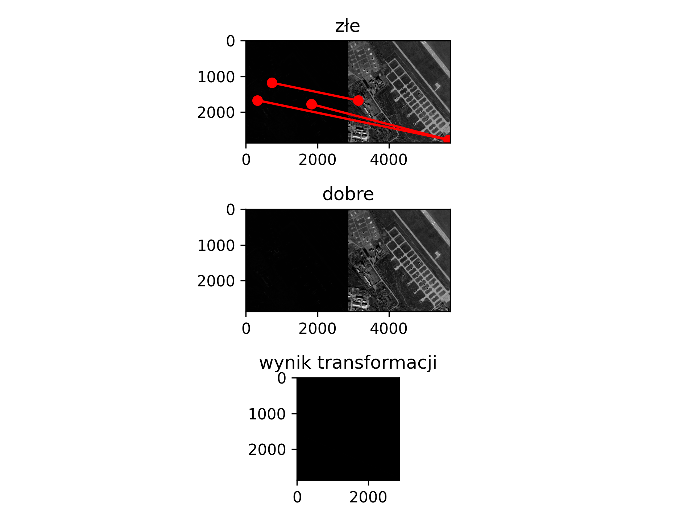Norm/SAR_UIAA_SUB_035m_bad -> Norm/EO_UIAA_SUB_035m_gray
N corr: 3Init SIFT time: 1.5020370483398438e-05
FLANN initial time: 3.838539123535156e-05
FLANN Maching time: 3.838539123535156e-05
Ratio test time: 1.5020370483398438e-05
Liczba dobrych dopasowañ: 2
RANSAC_init_time: 1.5020370483398438e-05
Init SIFT time: 6.198883056640625e-06
FLANN initial time: 2.5272369384765625e-05
FLANN Maching time: 2.5272369384765625e-05
Ratio test time: 5.245208740234375e-06
Liczba dobrych dopasowañ: 0
RANSAC_init_time: 5.245208740234375e-06
Init SIFT time: 7.3909759521484375e-06
FLANN initial time: 3.3855438232421875e-05
FLANN Maching time: 3.3855438232421875e-05
Ratio test time: 1.430511474609375e-06
Liczba dobrych dopasowañ: 0
RANSAC_init_time: 1.430511474609375e-06
Init SIFT time: 1.3113021850585938e-05
FLANN initial time: 3.3855438232421875e-05
FLANN Maching time: 3.3855438232421875e-05
Ratio test time: 0.02673029899597168
Liczba dobrych dopasowañ: 40
RANSAC_init_time: 0.02673029899597168
RANSAC_model_time: [[-8.98723946e-02 1.87144561e-01 2.79238925e+02] [-1.16273619e+00 4.14101042e-01 9.09939966e+02]]
RANSAC_model_time: 0.02673029899597168
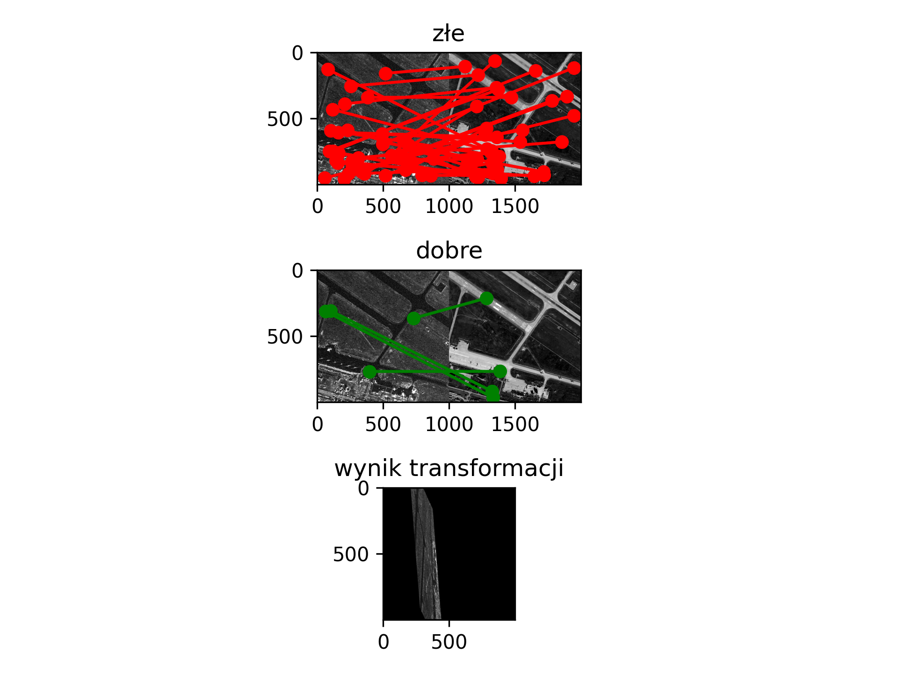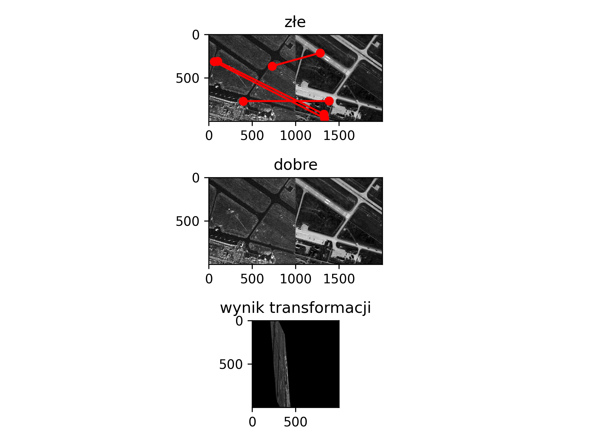Norm/SAR_URWH_SUB_1m_gray -> Norm/EO_URWH_SUB_1m_gray
N corr: 4Init SIFT time: 1.5735626220703125e-05
FLANN initial time: 3.266334533691406e-05
FLANN Maching time: 3.266334533691406e-05
Ratio test time: 0.0005130767822265625
Liczba dobrych dopasowañ: 3
RANSAC_init_time: 0.0005130767822265625
RANSAC_model_time: [[-1.16430886e-01 -2.50358800e+00 3.14521706e+03] [ 1.86944870e+00 2.61420501e+00 -2.53472084e+03]]
RANSAC_model_time: 0.0005130767822265625
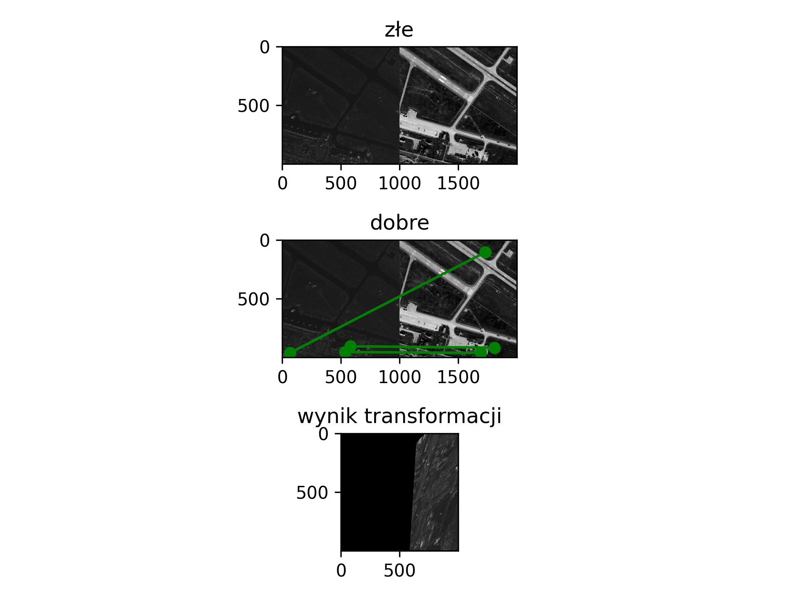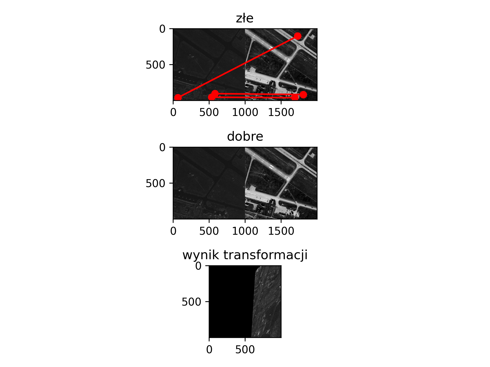Norm/SAR_URWH_SUB_1m_log -> Norm/EO_URWH_SUB_1m_gray
N corr: 3Init SIFT time: 1.239776611328125e-05
FLANN initial time: 3.7670135498046875e-05
FLANN Maching time: 3.7670135498046875e-05
Ratio test time: 8.368492126464844e-05
Liczba dobrych dopasowañ: 0
RANSAC_init_time: 8.368492126464844e-05
Init SIFT time: 1.2874603271484375e-05
FLANN initial time: 5.125999450683594e-05
FLANN Maching time: 5.125999450683594e-05
Ratio test time: 0.28334903717041016
Liczba dobrych dopasowañ: 108
RANSAC_init_time: 0.28334903717041016
RANSAC_model_time: [[-1.93040110e+00 -9.61784977e-01 6.74579339e+03] [ 1.22685742e+00 1.24630215e+00 -3.69307423e+03]]
RANSAC_model_time: 0.28334903717041016
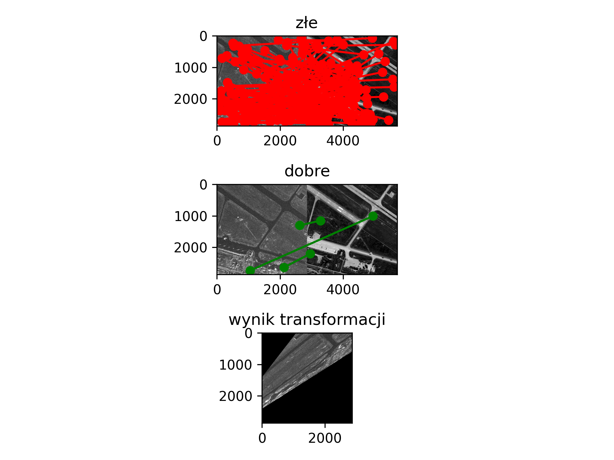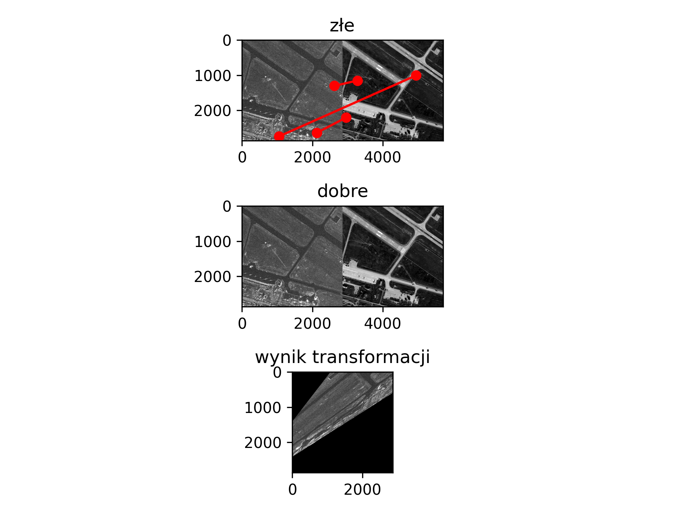Norm/SAR_URWH_SUB_035m_gray -> Norm/EO_URWH_SUB_035m_gray
N corr: 3Init SIFT time: 2.2649765014648438e-05
FLANN initial time: 5.1975250244140625e-05
FLANN Maching time: 5.1975250244140625e-05
Ratio test time: 0.0010709762573242188
Liczba dobrych dopasowañ: 1
RANSAC_init_time: 0.0010709762573242188
Init SIFT time: 1.6689300537109375e-05
FLANN initial time: 4.8160552978515625e-05
FLANN Maching time: 4.8160552978515625e-05
Ratio test time: 0.0004591941833496094
Liczba dobrych dopasowañ: 6
RANSAC_init_time: 0.0004591941833496094
RANSAC_model_time: [[ 2.66741645e-01 7.30818046e-02 3.29245844e+02] [-4.40894829e-02 4.80980335e-02 2.32665722e+03]]
RANSAC_model_time: 0.0004591941833496094
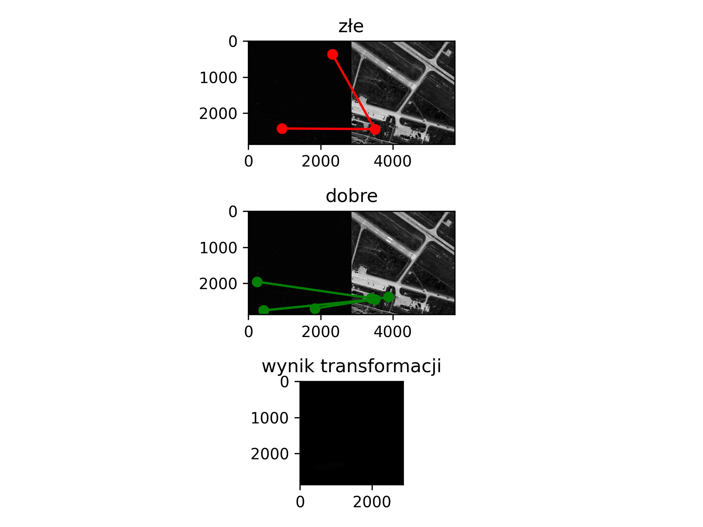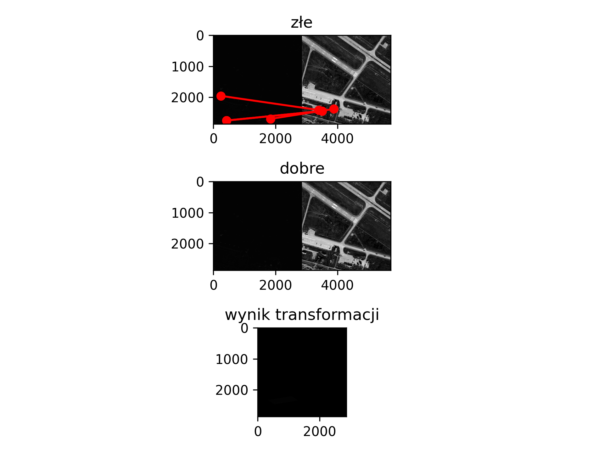Norm/SAR_URWH_SUB_035m_bad -> Norm/EO_URWH_SUB_035m_gray
N corr: 4Init SIFT time: 1.4543533325195312e-05
FLANN initial time: 8.821487426757812e-05
FLANN Maching time: 8.821487426757812e-05
Ratio test time: 2.86102294921875e-06
Liczba dobrych dopasowañ: 0
RANSAC_init_time: 2.86102294921875e-06
Init SIFT time: 1.0967254638671875e-05
FLANN initial time: 5.626678466796875e-05
FLANN Maching time: 5.626678466796875e-05
Ratio test time: 2.6226043701171875e-06
Liczba dobrych dopasowañ: 0
RANSAC_init_time: 2.6226043701171875e-06
Init SIFT time: 1.3113021850585938e-05
FLANN initial time: 4.863739013671875e-05
FLANN Maching time: 4.863739013671875e-05
Ratio test time: 3.337860107421875e-06
Liczba dobrych dopasowañ: 0
RANSAC_init_time: 3.337860107421875e-06
Init SIFT time: 1.5497207641601562e-05
FLANN initial time: 3.910064697265625e-05
FLANN Maching time: 3.910064697265625e-05
Ratio test time: 0.01956915855407715
Liczba dobrych dopasowañ: 29
RANSAC_init_time: 0.01956915855407715
RANSAC_model_time: [[ -2.0913868 -1.40913832 1349.77754177] [ 2.97830523 2.00804896 -1213.47699499]]
RANSAC_model_time: 0.01956915855407715
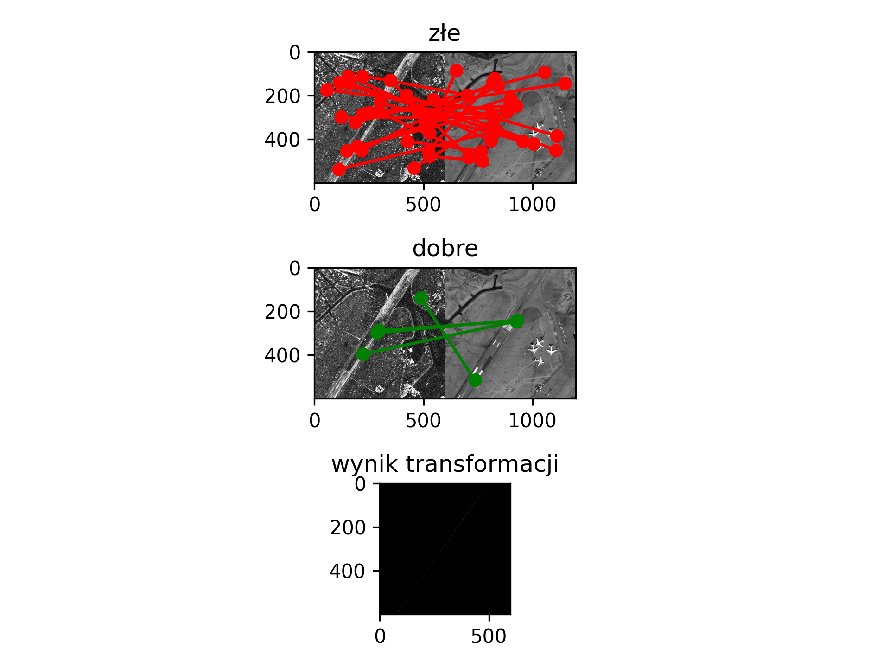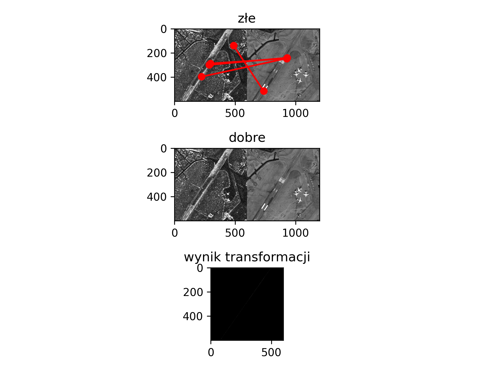Norm/SAR_UDYE_SUB_1m_gray -> Norm/EO_UDYE_SUB_1m_gray
N corr: 4Init SIFT time: 1.9073486328125e-05
FLANN initial time: 0.00012183189392089844
FLANN Maching time: 0.00012183189392089844
Ratio test time: 0.0006258487701416016
Liczba dobrych dopasowañ: 0
RANSAC_init_time: 0.0006258487701416016
Init SIFT time: 2.384185791015625e-05
FLANN initial time: 4.291534423828125e-05
FLANN Maching time: 4.291534423828125e-05
Ratio test time: 0.00014066696166992188
Liczba dobrych dopasowañ: 0
RANSAC_init_time: 0.00014066696166992188
Init SIFT time: 1.71661376953125e-05
FLANN initial time: 5.841255187988281e-05
FLANN Maching time: 5.841255187988281e-05
Ratio test time: 0.22629618644714355
Liczba dobrych dopasowañ: 119
RANSAC_init_time: 0.22629618644714355
RANSAC_model_time: [[-3.72970867e+00 5.41606001e-01 2.59530363e+03] [ 1.45121654e+00 -6.70158307e-01 7.22398528e+02]]
RANSAC_model_time: 0.22629618644714355
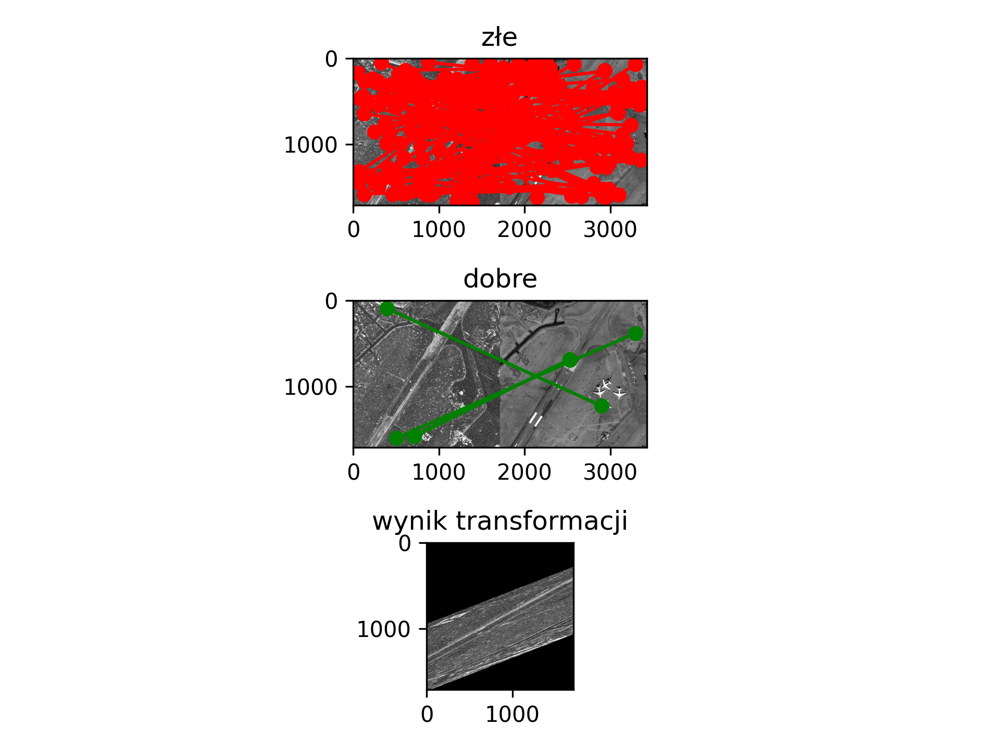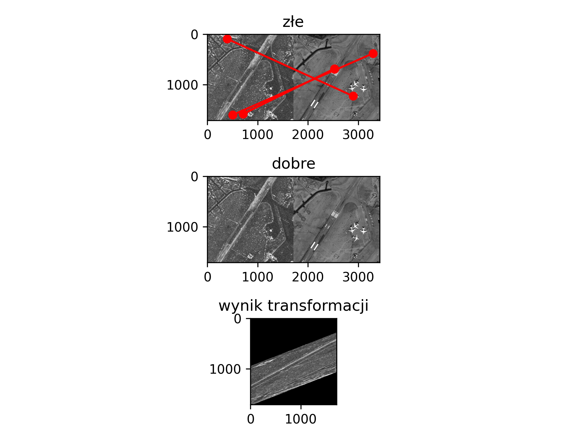Norm/SAR_UDYE_SUB_035m_gray -> Norm/EO_UDYE_SUB_035m_gray
N corr: 4Init SIFT time: 1.9311904907226562e-05
FLANN initial time: 5.125999450683594e-05
FLANN Maching time: 5.125999450683594e-05
Ratio test time: 0.006305217742919922
Liczba dobrych dopasowañ: 4
RANSAC_init_time: 0.006305217742919922
RANSAC_model_time: [[ 9.99332488e-01 2.14318161e-01 1.56713407e+02] [ 1.19480191e+00 -7.63938937e-02 2.20505626e+02]]
RANSAC_model_time: 0.006305217742919922
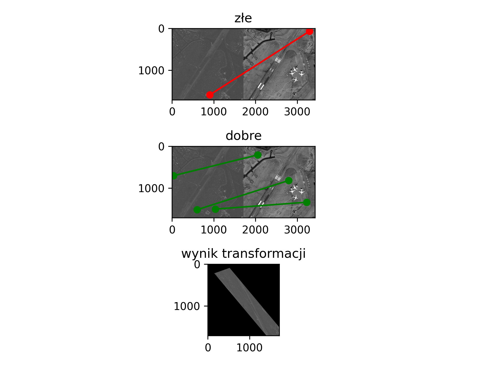
Norm/SAR_UDYE_SUB_035m_log -> Norm/EO_UDYE_SUB_035m_gray
N corr: 3Init SIFT time: 2.0742416381835938e-05
FLANN initial time: 7.486343383789062e-05
FLANN Maching time: 7.486343383789062e-05
Ratio test time: 0.0004119873046875
Liczba dobrych dopasowañ: 0
RANSAC_init_time: 0.0004119873046875